애장품 헬름을 먹기 위해선 뮤지엄을 클리어 해야함 + 소장품 키트
아무튼 빨리 깨면 깰수록 상대적으로 성장 속도 가속화 시켜서 스테 미는데 도움이 많이 되는 것 같음
뮤지엄 올 클리어 기준 본인 싱크 : 223
콘솔:
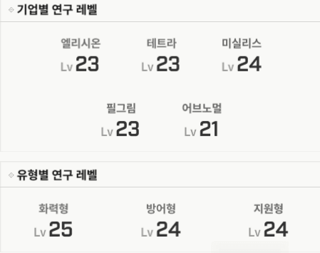
애들 스작해줬음?
1군 라피 돌니스 크라운 메스트 스화 헬름 목단 네온 -> 10/10/10
2군 나유타 세이렌 리버 7/7/7
나머지 1/1/1
난이도 최하 :
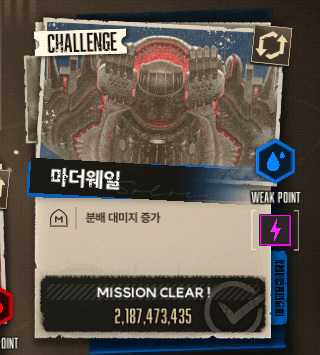
3.5유입이면 기본적으로 돌니스 네네온 있다고 생각하는데
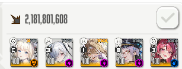
진짜 돌니스 네네온 넣고 네네온에게 마스트만 몰아주고 오토 켜도 깨진다
렐루대신에 누굴 넣어도 전혀 상관 없음
난이도 하:
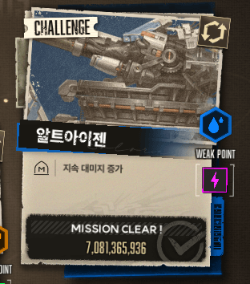
역시 돌니스 네네온은 신임 다만 싱크렙에 따라 2군 3군덱 더 짜야할 수도 있음
(난 싱크181에 깻을때 5덱으로 깻었음)
하드 13지 알트아이젠 보스 클리어 경험이 있다면 그 경험 살려서 파츠쪽 체력 미리 갈아두면서 하면 체력관리 용이함
알트아이젠만 다 깨도 애헬름 재료가 다 모이기 때문에(160개) 우선순위로 두는거 추천함
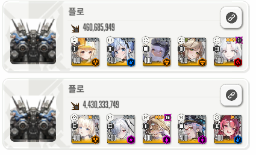
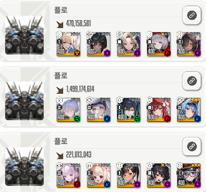
보면 알겠지만 진짜 버스트 굴러만 갈 수 있게 짬덱 최대한 우겨박아서 1,2억이라도 더 뽑아서 깨면 되는거임
일부 덱중에 3덱 5덱 엘끼 아인 같은 경우 톡톡이 연습하면서 버충 빨리 채우고 딜 꾸역꾸역 우겨 박는 방향으로 하면 될듯함
난이도 하 :
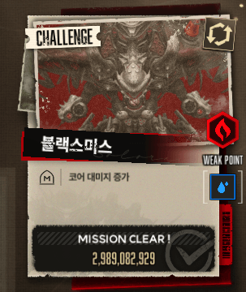
스노우화이트 헤비암즈만 있다면 굉장히 난이도 내려가는 보스
없다면? 그래도 네온 아니스 체급 + 추가덱 짜면 웬만하면 깨지는 보스 주의사항도 없다
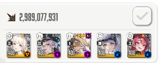
난이도 중~중상
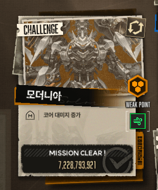
흑련 리버가 있다면? 난이도 중 정도 봄
일단 난 흑련 리버 없는 상태로 클리어임
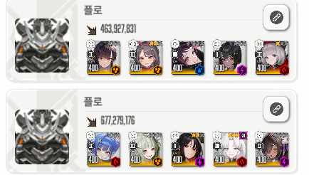
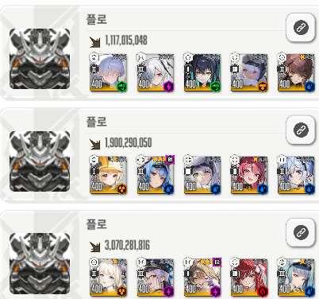
일단 이 당시 클리어때는 애장품은 헬름말곤 없었음 목단도 저거 애장품 없는 상태임
웬만한 추천은 1덱에 몰빵하는게 아니라 적당히 키워둔 딜러들을 배분해서 각 파티마다 시작하자마자 코어를 부술 수 있게 여러 파티 구성
이게 제일 낫다. 그래야 딜을 최대한 더 뽑을 수 있었음 경험상
참고로 지금 넣어놓은 애들 1군덱 + 특정 딜러(라피 스화 헬름) 몇명 빼곤 장비 대충 아무거나 + 스작 1/1/1이다.
그러니까 안키워졌어도 일단 애들 성능 보고 넣으면 될듯 예를 들어서 닌자 델타 왜 넣음? (받뎀감 버프 조금이라도 넣으라고....)
본인이 가지고 있는 애들 중에서 진짜 안쓴다 싶은 애들도 일단 넣어서 1,2억이라도 더 뽑는 느낌으로 하면됨
여기서 받은 보상은 헬름애장품 재료로 받고 목단으로 바꿔서 애목단을 빨리 만드는 것을 추천
미란다꺼는 어쩌고? -> 스톰브링어 깨서 그걸로 하면 됨
난이도 상~최상
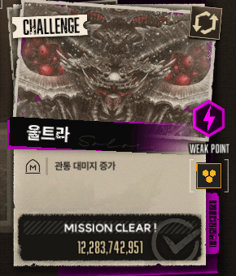
할배들이 관통에 얼마나 미쳤는지 알 수 있는 점수임;;;
당시 접대니케 레드후드가 있냐 없냐에 따라 난이도 상~최상이라고 보는데 일단 난 없어서 최상이었음
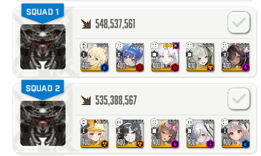
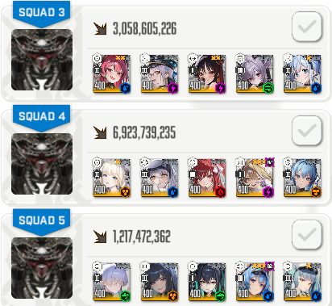
이때 당시 애장품 현황 -> 목단, 헬름 끝
프바 토브는? -> 깡통임 소장품도 없음
기본적으로 추천은 스화 + 크라운 묶어 쓰기(스화 버스트 차지시간 길어서 크라운 쉴드 받으면서 맞딜이 좀 중요함)
웬만하면 라피도 크라운쪽에 묶어서 맞딜 쳐서 최대한 코어치기(저번 수냉 울트라 솔레때 했던 것 처럼 조준보정 풀고 1페에서 코어 최대한 치면됨)
만약 레후가 있다면 난이도 굉장히 내려갈 것 같음 혹은 이번에 수렐루나 수말챠 뽑아서 대충 4/4/4만 박아줘도 딜 확 뛸 것으로 보임
난이도 상~최상 :
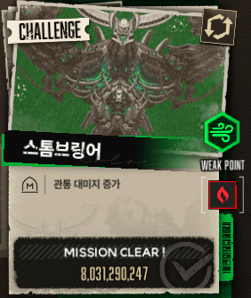
라피 : 레후 없으면 빠른 포기 추천
일단 속성저지 이것부터가 벽임 심지어 엄~~~~~~~~청 아픔
그렇다고 지금 뉴비가 미하라 성장이 되어 있을리는 없다고 생각함(없는 사람 조차 있을거고)
어차피 여기서 받는 재료로 애장품 미란다를 줄거라서 천천히 해도 될듯 하긴 한데(애란다 쓸려면 멀었음.... 2돌 되어 있는 사람도 많지 않을거고)
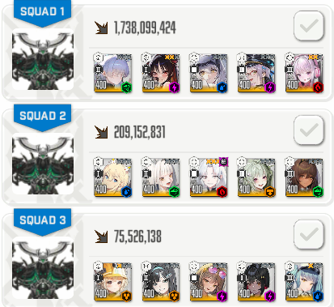
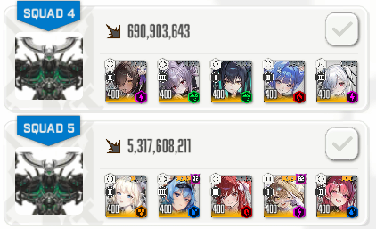
3덱 보면 알겠지만 여기서 짬덱은 살아서 완주조차 힘들 지경임 + 각 파티에 속성저지용 작열 니케 무조건 투입해야하고
1.단 라피 조합은 저걸로 고정 박고 라피선버로 시작해서 라피에게 모든 마스트를 몰아주면됨 + 속성 저지는 무조~~~~~건 최대한 늦게
왜냐하면 속성저지 타이밍 동안 코어 열려서 라피가 진짜 명치 뚫어버림 최대한 딜 더 뽑아야함
+라피의 장전은 무조~~~~~~~건 풀버 타이밍내에 장전해야함 풀버 타임 아닐때 장전하는순간 딜로스 너무 심함 마우스 살짝 똇다 누르는 컨으로 빠르게 장전
여기서부터 애목단이 있다면 다른 한 덱도 완주난이도 자체는 매우 내려감
1덱의 경우 속성저지 엘끼인데 메인딜러가 작열이 아니기 때문에 이 경우 속성저지 최대한 빠르게 하고 넘어감
4덱 나가덱이 좀 히트인데 이거 왤케 점수높음? ----> 나가 엄폐물 재생성+회복이 진짜 말도안되게 히트임 4/4/4 정도 주고 하면 완주 무조건 쌉가능
여기까지가 공략 끝
다들 빠르게 깨고 보상 달달하게 챙겨가길 바라